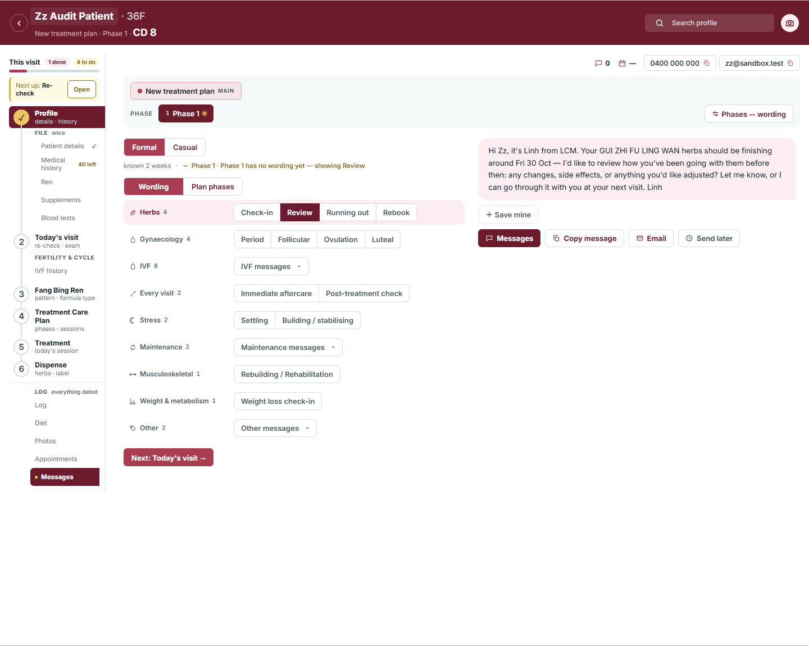
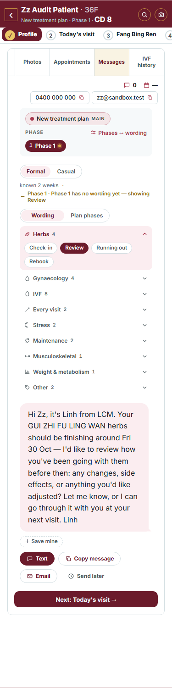
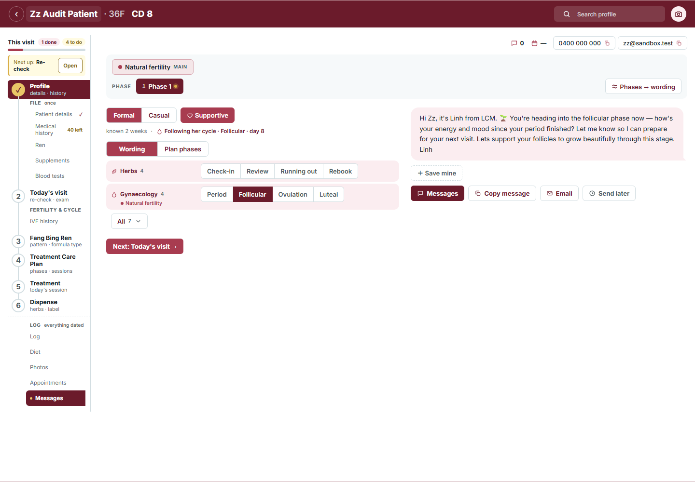
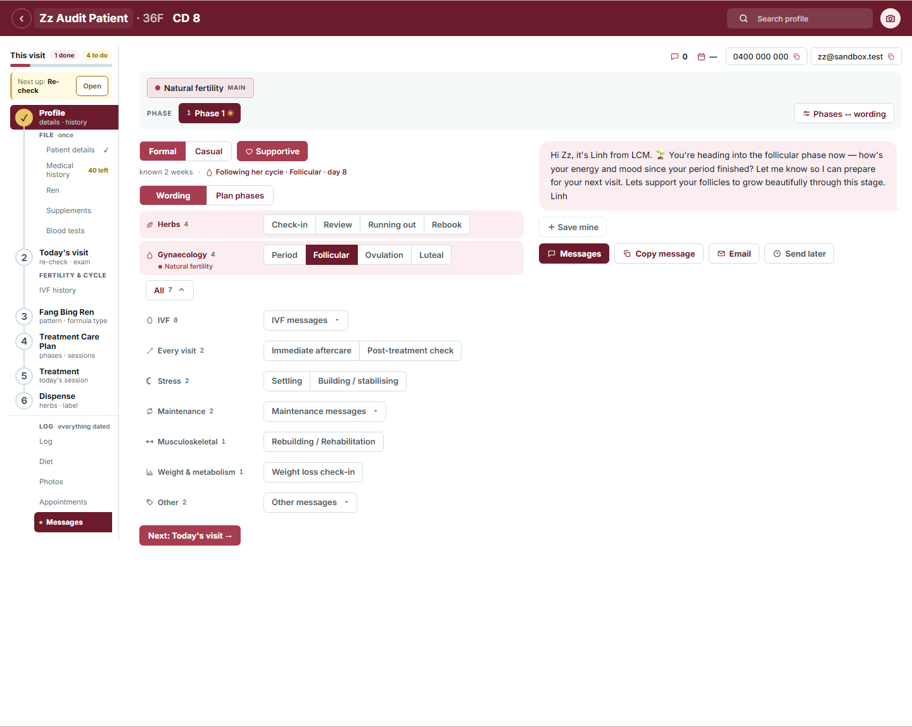
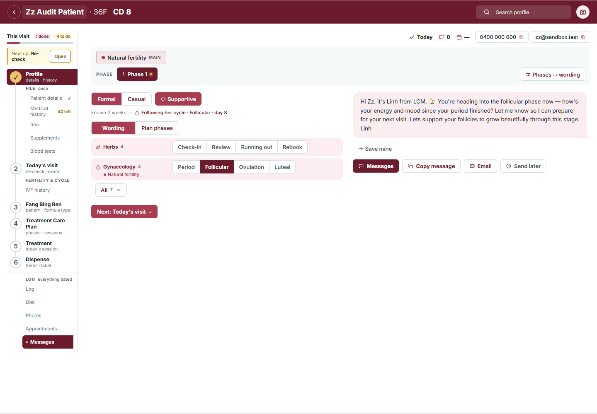
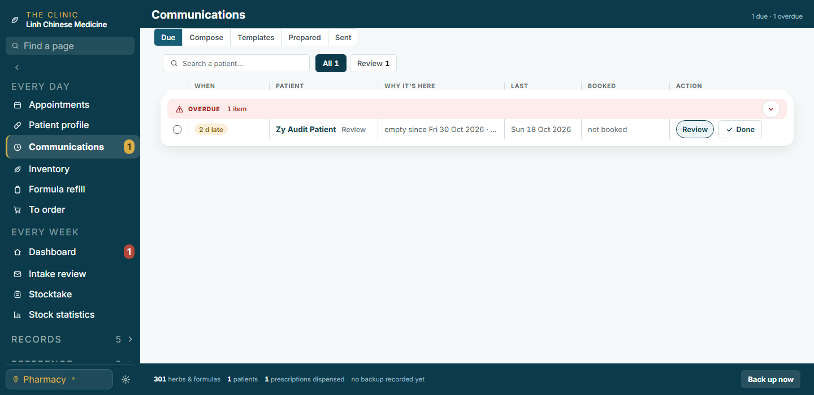
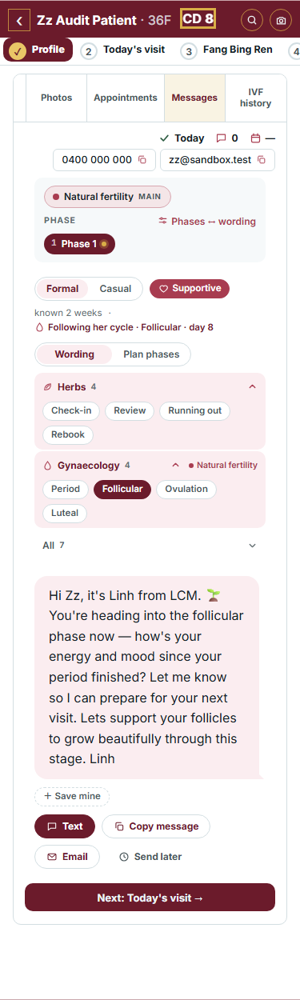

Messages: one “sent today” mark, and the groups fold
Idea 11 of your 29 Oct audit. Your words: the Text / Messages / Copy tap leaves one mark, “sent today”, on the patient, so the Due list and the band stop asking; the ten template groups fold to this plan’s own set, the rest behind All ▾. The “after” pictures are the real pages drawn by a prototype.
Measured on your 27 Oct export
3messages ever prepared (none sent, none planned)
65follow-up records, 34 patients
41reviews overdue and never ticked
9check-ins due, 0 ticked
14reviews ticked done, ever
3contact outcomes on patient records
548 · 469patients with a phone · an email
98patients with an open plan (22 plan names)
So the Due list fills with rows nobody closes: the text goes out from the patient’s Messages tab, and the ✓ Done on Communications is a second trip she rarely makes.
Before

Messages tab, 1440. Nine groups open at once; Text / Messages / Copy leave nothing behind.EVERY DAY → Communications → Due. Both rows stay until a separate ✓ Done.

375: nine group rows to scroll past before the message.
After (prototype, the real pages)

Natural fertility plan: Herbs + Gynaecology stay; the other seven sit behind All · 7 ▾.

All ▴: the rest unfold below as the same rows.

After the Messages tap: the band’s first tile reads ✓ Today (hover: Sent · Follicular by Messages).

Due: Zz’s review and acupuncture rows are done; only the other patient is left.

375: two groups + one All row; ✓ Today in the band.
Round 1 · the mark
1 · Where the mark shows on the patient
A · A band tilerecommended
✓Today▭0▦—0400 000 000
First tile of the Messages band; hover says “Sent · Follicular by Messages”. Later days read the date.
B · The tapped button stays ticked
✓ Sent today⧉ Copy message✉ Email
The button itself turns into the mark for the day; nothing in the band.
C · Both
✓Today0
✓ Sent today⧉ Copy message
2 · What the tap closes on the Due list
A · Every due or overdue row of this patientrecommended
10 dZz · AcupunctureContact
2 dZz · ReviewReview
2 dZy · ReviewReview
She reached out today; a review not due yet stays.
B · Only the row the message is for
10 dZz · AcupunctureContact
2 dZz · ReviewReview
2 dZy · ReviewReview
The acupuncture row keeps asking.
C · Nothing, ✓ Done stays its own tap
10 dZz · AcupunctureContact
2 dZz · ReviewReview
The mark shows on the patient only.
3 · Undo
A · In the toast, 6 secondsrecommended✓ Sent today · Follicular UndoThe one toast; the mark and the closed rows come back together.
B · On the band tile, all day
✓Today✕0
A ✕ beside the tile until midnight.
4 · Email
A · Email leaves the mark toorecommended
▭ Messages⧉ Copy message✉ Email
Four taps, one mark.
B · Only Text / Messages / Copy
▭ Messages⧉ Copy message✉ Email
Your three words, exactly.
Round 2 · the fold
5 · Which groups stay open
A · This plan’s own + Herbs when herbs are onrecommended
Herbs4Check-inReviewRunning out
Gynaecology4PeriodFollicularOvulation
All 7 ▾
B · This plan’s own only
Gynaecology4PeriodFollicularOvulation
All 8 ▾
Herbs’ Check-in / Review go behind All too.
6 · The All control
A · A chip under the groupsrecommendedAll 7 ▾On the phone it is a row like the groups above it.
B · A group row
⊕ All other groups 7⌄
Same icon + label + count shape as the groups.
7 · What All opens
A · The other groups unfold below, as rowsrecommended
All 7 ▴
IVF8IVF messages ▾
Every visit2Immediate aftercarePost-treatment check
8 · The Communications check-in panel (same composer)
A · Same fold, same mark; the row closes on Done as nowrecommended
Draft message▭ Messages⧉✓ Sent todayHow did it go✓ Done — save to history
B · Same fold, no mark there
Draft message▭ Messages⧉How did it go✓ Done — save to history
C · Leave the panel as it is
Draft message · nine groups openHow did it go✓ Done — save to history
9 · No plan on file
A · The row’s own kind + All ▾recommended
Herbs4Check-inReview
All 8 ▾
Herbs for a herb row, Every visit for an acupuncture row.
B · All groups open, as now
Herbs4Check-inReview
Gynaecology4PeriodFollicular
IVF8IVF messages ▾
…
The mark is one entry in the patient’s contact log (the list the History and the phase record already read), written by one door; the Due rows it closes are the same done flags ✓ Done sets today, so the Dashboard count and the menu badge follow. Nothing is sent by the app, as before.